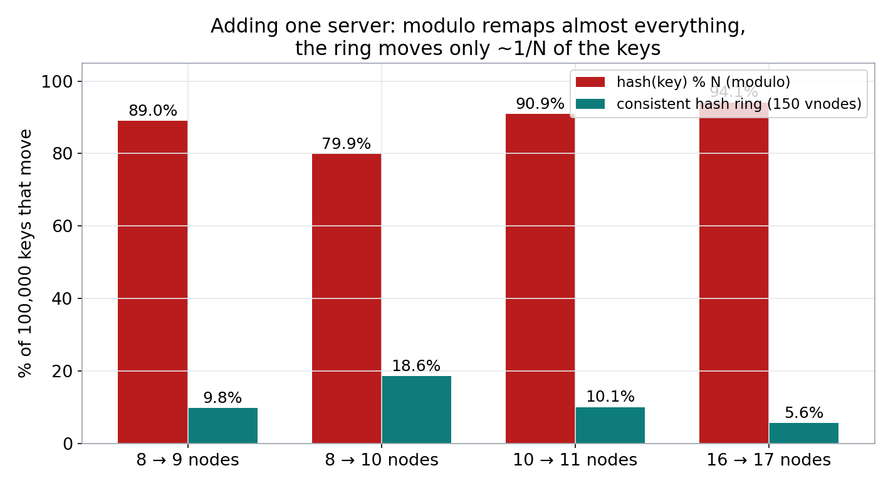
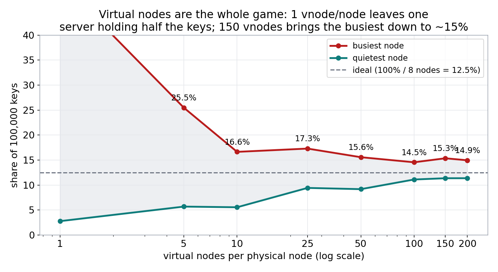
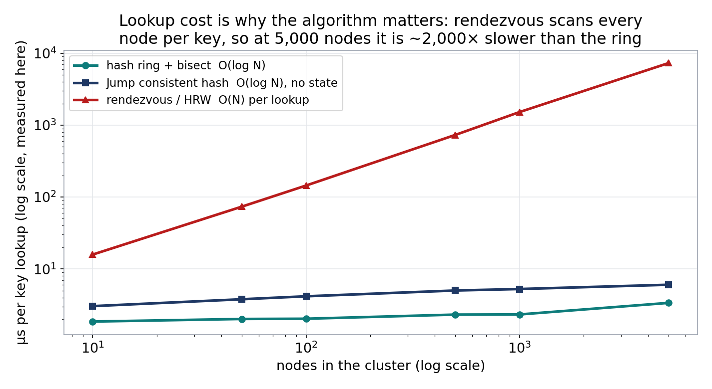
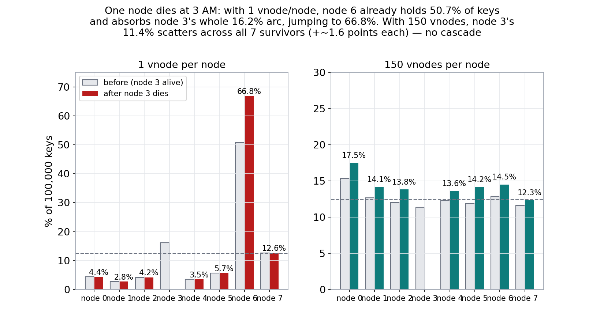

At 3 AM on a Thursday, an on-call engineer added one cache server to a fleet of eight — a routine scale-out, the kind that is supposed to be boring. By 3:05 AM, the database was on fire. Adding the ninth server had remapped 89% of the cache keys to new homes, so nearly every request missed the cache at once and fell through to the database. The scale-out meant to relieve the database had effectively deleted the cache.
Six weeks later, the same team had the opposite incident: one cache server crashed, and its neighbor melted. The dead server's keys all landed on the next server clockwise, which doubled its load in a second and crashed too — and the one after it. The cascade stopped only when the fleet was down to four servers holding the whole dataset.
Both incidents have the same root cause, and the same fix. The problem was never the servers. It was the map — hash(key) % N — and the fix is a circle.
This is Part 7 of System Design, Plainly: one concept per post, evergreen, beginner-friendly, with the concrete numbers and the failure modes. Today: consistent hashing — the ring that lets you add a server without moving 89% of your keys, and the virtual nodes that keep one dead server from taking its neighbor down with it.
The ELI5 version
Imagine a clock face with the numbers 0 to 100. You have eight friends standing around the clock, each at a random position. You also have 100,000 marbles, and each marble has a number. The rule is simple: a marble belongs to the first friend you meet going clockwise from the marble's number.
Now a ninth friend joins and stands somewhere on the clock. Which marbles change hands? Only the ones between the new friend and the previous friend clockwise from them — the marbles in that one small arc. Every other marble keeps its owner. That is the whole idea: adding a server only moves the keys in the new server's arc, about 1/N of the total, instead of nearly all of them.
The naive alternative is hash(key) % N: divide the hash by the number of servers and take the remainder. It looks fine until N changes — then the remainder of almost every key changes, and 89% of your data moves. Our simulation makes it exact: with 100,000 keys, growing a cluster from 8 to 9 servers remaps 89.0% of keys under modulo, and 9.8% on a consistent hash ring. Growing 10 to 11: 90.9% vs 10.1%.

There is one catch, and it is the catch that causes the second incident. With one point per server on the clock, the arcs are random — and random arcs are wildly unequal. In our simulation, one of eight servers landed on an arc holding 50.7% of all keys while another held 2.8%. The ring solves the membership problem and creates a load problem in the same stroke. The fix for the fix is virtual nodes, and it is the single most important detail in this post.
How it works: the ring, the vnodes, and the preference list
The ring. Hash the keys and the servers into the same space — say, 0 to 2^64 — and arrange them on a circle. A key belongs to the first server clockwise from it. Lookups are a binary search over the sorted server points: O(log N). Adding a server inserts its point and steals exactly the keys in its arc; removing one hands its arc to the next server clockwise. Nothing else moves. This is Karger et al., 1997 — the paper consistent hashing was invented in, built for web caches, and the idea Akamai was founded on.
Virtual nodes. Instead of placing each physical server once, place it at 100–200 points around the ring (server-3#0 … server-3#149). Now each server's responsibility is scattered into many small arcs, so the load evens out — and when a server dies, its arcs are scattered across many survivors instead of landing on one. The numbers from our simulation, 100,000 keys over 8 servers (ideal share: 12.5%):
| vnodes per server | busiest server | quietest server |
|---|---|---|
| 1 | 50.7% | 2.8% |
| 10 | 16.6% | 5.5% |
| 50 | 15.6% | 9.2% |
| 150 | 15.3% | 11.4% |
One vnode per server is a lottery ticket: one machine holds half your data. At 150 vnodes the busiest server is within 3 points of ideal. More vnodes means a smoother distribution, at the cost of a bigger ring map and more gossip on membership change — 100–200 per node is the usual range. Cassandra defaulted to 256 vnodes per node for years, then dropped it to 16 in 4.x once the team decided the metadata wasn't worth it.

Replication: the preference list. In a real store, a key doesn't live on one server — it lives on the first N servers clockwise (Dynamo's "preference list", 2007: usually N=3). Reads go to the first, writes to all three, and a dead server's keys are already sitting on its successors. This is where consistent hashing stops being a routing trick and becomes a storage design: the ring decides which servers hold a key, and the preference list decides how many.
Weighted nodes. Give a bigger server more vnodes — twice the capacity, twice the points — and it takes twice the keys. This is how heterogeneous fleets are handled without special cases: vnode counts are the weights.
The state of the art: five algorithms, one tradeoff
The ring is the classic, but it is not the only consistent hashing algorithm, and the differences matter. They all guarantee minimal movement — only ~1/N keys move on a membership change — but they differ in lookup cost, memory, and what kinds of cluster changes they survive:
| Algorithm | Year | Lookup | Memory | The catch |
|---|---|---|---|---|
| Rendezvous / HRW | 1996 | O(N) per key | None | Scans every node per lookup |
| Hash ring (Karger) | 1997 | O(log N) | O(N × vnodes) | Needs vnodes for balance |
| Jump consistent hash | 2014 | O(log N) | None | Only sequential add/remove — can't drop an arbitrary node |
| Maglev | 2016 | O(1) | O(M) lookup table | Table rebuild on membership change |
| AnchorHash | 2020 | O(1) avg | O(A) anchor array | Fixed capacity — pre-allocate the max cluster size |
| MementoHash | 2023 | O(log N) worst | Minimal | Newest; handles random failures, no fixed capacity |
The lookup-cost column is not academic. We measured all three classic approaches on this machine: at 5,000 nodes, a ring lookup costs 3.4 µs, Jump 6.0 µs, and rendezvous 7,302 µs — over 2,000× slower than the ring, because rendezvous hashes the key against every node to find the winner. Rendezvous is beautifully simple (no state at all, and every node computes the same answer independently, which is why it survives in some load balancers), but O(N) per lookup is a tax you pay on every single request.

The newer algorithms exist because each classic has a hole. Jump (Lamping & Veach, Google, 2014) needs no state and no ring — just a hash and a loop — but it can only add or remove buckets in order, so a random node failure breaks its invariant. Maglev (Google, NSDI 2016) precomputes a permutation table of size M (a large prime, typically 65,537 entries) and looks up in O(1); it powers Google's network load balancer, and the table rebuild is the price of a membership change. AnchorHash (2020) re-hashes into a fixed anchor set until it lands on a live bucket — O(1) on average, minimal disruption — but the anchor set is pre-allocated, so the cluster has a ceiling. MementoHash (2023, arXiv:2306.09783) keeps a small "memento" of removed buckets, handles random failures, needs no fixed capacity, and its authors report it beats AnchorHash and DxHash on average-case lookup while matching them worst-case. If you are choosing in 2026: the ring with vnodes is the default, Jump is the right call when you have no place to keep state and membership only grows, and Maglev is the right call when lookups must be O(1) at very large scale.
Why it breaks: the four failure modes
1. The cascade. This is the second incident from the opening. A server dies; its keys go to its clockwise successor; the successor, already hot, tips over and dies; its keys go to its successor. In our simulation with 1 vnode per server, node 3 dies holding 16.2% of keys — and node 6, which already held 50.7%, absorbs all of them and jumps to 66.8%. With 150 vnodes, node 3 holds 11.4% and its keys scatter across all seven survivors, each gaining at most 2.3 points. Virtual nodes are not an optimization. They are the difference between a node failure and a fleet failure.

2. The hot key. Consistent hashing balances keys, not load. If one key gets a million requests a second — a celebrity profile, a viral post, a config key every service reads on startup — it lands on one server, and no number of vnodes helps, because all the traffic is one key on one arc. The ring is the wrong tool for skewed popularity. The fixes live outside the ring: replicate hot keys to several servers, split a hot key into shards (user:123:0 … user:123:9), or cache it at the edge. If an interviewer asks "when does consistent hashing fail?", the hot key is the answer they want first.
3. The rebalancing storm. Adding a server moves ~1/N of keys — but 1/N of a large dataset is still a lot of data, and it all moves at once, from the servers that used to own it to the new one. A naive join can saturate the new server's disk and network before it serves a single request. Production systems throttle the handoff (Cassandra streams ranges in the background; Dynamo's preference lists let the new node catch up before it takes reads) and add servers one at a time, never in a batch. The ring guarantees which keys move, not how fast they should.
4. The hash you didn't test. Every property above assumes the hash function spreads keys uniformly. A bad hash — a weak function, or a good function fed structured keys like sequential user IDs with a common prefix — clusters keys on part of the ring and quietly reintroduces the imbalance vnodes were supposed to fix. This is also why the ring needs a real hash (SHA-256, xxHash, Murmur) and not hash() in a language where it is randomized per process: if two servers disagree about where a key lives, the key is effectively lost. Same hash, same ring, on every node, or nothing works.
One more, for the interview: consistent hashing is not consensus. The ring tells every node where a key should live, but it does not tell them when membership changed. If two servers disagree about the membership list, they route the same key to different homes. Real systems pair the ring with gossip (Cassandra), a coordinator (DynamoDB's control plane), or a strongly consistent membership view — the ring is the map, not the agreement about the map.
The interview angle
"Design a distributed cache" is the question this post is really about, and the grading rubric is almost entirely the failure modes above. The answer that passes:
- Start with the problem, not the algorithm.
hash(key) % Nremaps ~89% of keys when N changes — say the number, don't gesture at it. The requirement is minimal movement on membership change, which is what the ring buys. - Draw the ring, then immediately add virtual nodes. The candidate who draws one point per server and stops has drawn a system where one server holds half the data. Name the vnode count (100–200) and the reason (load balance and failure spread).
- Name the lookup cost and pick the algorithm by it. Ring O(log N) with a bisect; rendezvous O(N) and why that rules it out at scale; Jump when there is no state to keep; Maglev when lookups must be O(1). The 2,000× number at 5,000 nodes is the kind of concrete figure that ends the discussion.
- Name the failure modes unprompted: the cascade (dead node's successor doubles), the hot key (hashing balances keys, not load), the rebalancing storm (throttle the handoff), and the membership-agreement problem (the ring is not consensus).
- Close with replication: the preference list, N=3, and what happens on read when one replica is down — which is the bridge to Part 8.
Takeaways
- Modulo is the bug.
hash(key) % Nremaps ~89% of keys when the cluster grows 8 → 9. The ring moves ~10% — the keys that must move, and no others. - Virtual nodes are not optional. One point per server leaves one machine holding 50.7% of the keys; 150 vnodes brings the busiest to 15.3% against a 12.5% ideal — and turns a node failure from a cascade into a rounding error.
- Lookup cost is the algorithm choice. Rendezvous is stateless and elegant and 2,000× slower than the ring at 5,000 nodes. Jump is stateless and fast but can't handle a random failure. Maglev is O(1) but rebuilds a table on every change.
- The ring balances keys, not load. A hot key still melts one server. Replicate it, split it, or cache it at the edge — the ring can't help you.
- The ring is a map, not an agreement. Every node must share the same membership view, or the same key lives in two places at once. Pair the ring with gossip or a control plane.
Follow for the next part: Part 8 is Replication — the preference list, quorums, and what "three copies" actually guarantees when a server lies. If this series is useful, the follow button on the dev.to profile is where the next part lands first.
Honesty note: the 89.0% / 9.8% remap figures, the vnode balance table, the cascade numbers, and the lookup benchmarks are simulations run on this machine (companion notebook) — real measurements of a toy ring, not production telemetry. The Karger 1997, Dynamo 2007, Jump 2014, Maglev 2016, AnchorHash 2020, and MementoHash 2023 (arXiv:2306.09783) facts are from the papers; MementoHash's "beats AnchorHash/DxHash on average case" is the authors' own reported result. Cassandra's 256 → 16 vnode change is from the project's own history. No Meta content, per the standing exclusion.